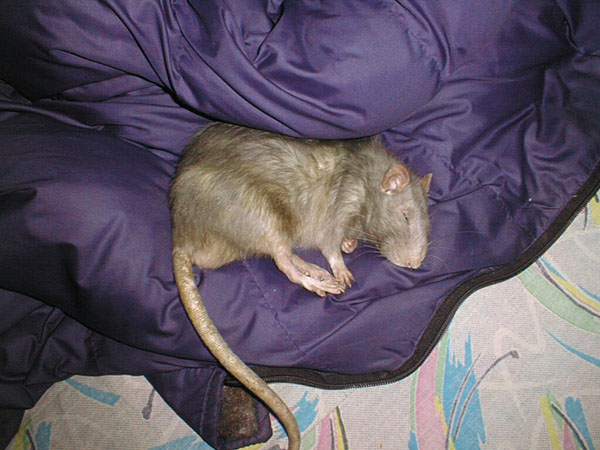
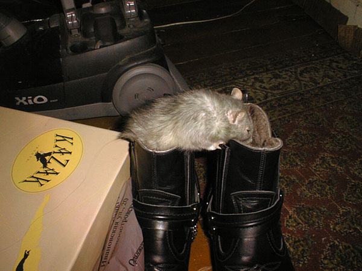
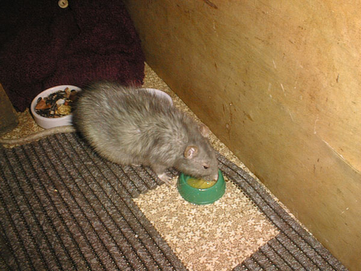
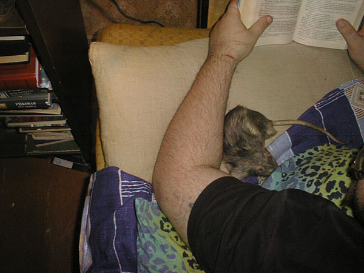
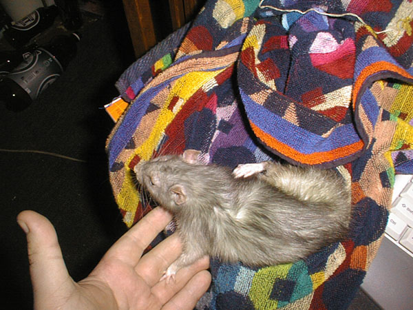
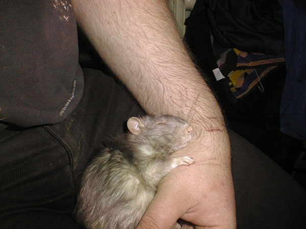

Один
Декабрь 2004 — февраль 2005
декабрь 2004
Одину уже больше двух лет. Он гораздо больше спит, выбирая места потеплее и помягче, а не поукромнее, как раньше... Но активно шлепает ластами по комнате, когда бодрствует.

— Спальный мешок — это правильное изобретение.

Снится молодость.

— Новые сапоги! Вкусно пахнут!

— Если оставлять между аппаратурой щели, то там могут завестись крысы. Вот меня завели...
январь 2005
Один уже старенький... У крыс год жизни эквивалентен приблизительно 30 человеческим.

— Перепелиные яйца — это вкусно!

— Чего читаешь?

— Не интересно. Я тут посплю рядышком...

— А вот там, за шкафом, я любил проводить время, когда был помоложе...
февраль 2005
Одину два года и четвертый месяц...

— Пока могу сам чесаться — я еще не старик! Дай-ка опереться...

Доверие

Дай руку, друг...